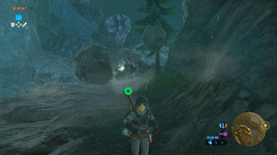
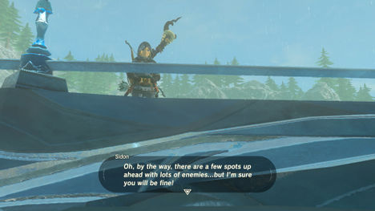
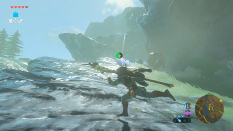
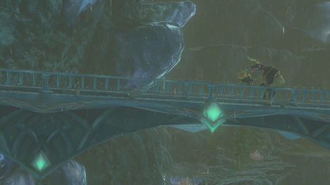
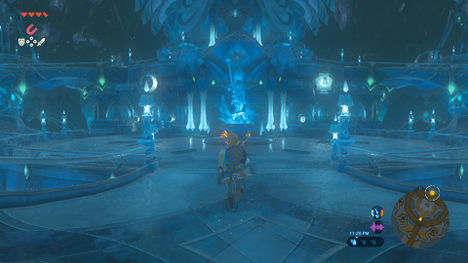

Meeting the Prince
当你接近这座桥时，西顿王子将迎接你，告诉你他的故事，找到一个海利安人来帮助他在左拉领域解决一个可怕的情况。
他会问你是否可以去左拉之域，但是由于降雨不断，攀登也不会那么好。 相反，你必须采取一个排除许多怪物的路径 - 所以确保你有足够的装备和食物。 西顿还会警告你有许多使用电力攻击的敌人，并给你一个很好的抗电药剂。
正如西顿来到河边，你必须走路。 沿着河流吹起来返回，所以要注意沿着水边的Octoroks，而Lizalfos躲在路上，因为他们会伪装自己。 更进一步，你必须越过河流在大岩石上，因为更多的Octoroks射击你。 要么狙击他们或使用你的盾牌来偏转他们的攻击。
The Road to Oren Bridge

沿着一条长长的斜坡路线，西顿将再次出现，鼓励你继续前行。 在长坡的尽头，注意敌人会把石块推到路上，并处理顶部的Lizalfos。 你会进入一个充满荆棘的小岩石峡谷，你可以烧掉，或爬出峡谷，继续往上走。
路上是你面临的最困难的挑战之一 - Lizalfos弓箭手聚集沿着道路，他们都使用闪电箭。 这些不仅造成大量的伤害 - 而且瘫痪可能会导致你掉下武器。 更糟糕的是，如果你站在水中，他们打水，你还会被打倒。 要么喝下你的抗电酏剂，然后狙击他们，或者试着偷偷摸摸潜行过去，如果你不想对付他们（如果你打败他们，你可以得到一些自己的闪电箭。）

{kind=link}
{kind=link}
{kind=link}
{kind=link}
{kind=link}
{kind=link}
{kind=link}
{kind=link}
当你来到下一篇空地，西顿会再次迎接你，在你的旅程的下一个路上欢呼你。 你必须经过另一个小型峡谷，那里有电蝙蝠。 这些敌人放出一个小领域的电力场，所以用短距离武器不明智。 用长矛或们用弓将他们安全地带走，并进入下一个空地。 更多的Lizalfos在下面等待者，所以准备好处理他们，或者给他们投掷一个炸弹来迷惑他们。
{kind=link}
当你穿过奥伦大桥时，西顿会再次出现，警告你还有更多的敌人等待着前进。 幸运的是，还有一个Lizalfos在一个烹饪锅等待着，你可以用来制作一些更多的菜肴（希望有抗电的东西），如果你需要。
{kind=link}
爬上长长的斜坡，注意更多的巨石。 当他们开始下降时，跑到一边避开他们，然后进入另一个峡谷，一个大石块将阻挡你的路。 翻越它继续。
Braving Ruto Mountain
当您离开峡谷前往Lizalfos伏击圈时，一定要检查一下，储备一些矛。

更多的Lizalfos等待您的前进，他们装备着回旋镖，那里一个大的蓝色墙壁，讲述左拉的第一部分的历史。 之后，这座大型的卢托桥等着你。
{kind=link}
中途，西顿将从下面叫你，并警告说埋伏在后面，当Moblin来袭。 使用远程武器远离他，进行攻击，解决Moblin。
{kind=link}
{kind=link}
当你走上下一条路，你将面临最后的遭遇 - 一个闪电的Wizzrobe。 这个巫师将在空中跳舞，同时从闪电棒上射出闪电。 如果您不准备移动或具有抗电效果，这些会造成伤害。 他们也可以召唤电蝙蝠或chuchu来打击你，但最糟糕的攻击是如果他们在暴风雨中开始跳舞。 这个特殊的巫师会召唤雷电，导致闪电开始以大爆炸半径击中你附近的所有金属物体。 这也包括你的武器和盔甲，如果你不小心！ 如果你看到你的物品开始发出静电，快速切换到不进行电力的木制或守护者物品！ 当最后巫师倒下时，收集你的东西，并在完成旅程的最后一站之前掠夺你需要的东西，并用Zora的更多话来查看另一个蓝色的墙壁。
{kind=link}
{kind=link}
当你在拐角处，路径会开始向下倾斜，你可以在右边的水库里找到一部分神兽。 从这里你可以盾牌花型，滑翔伞，或者沿着两个Moblins的斜坡跑下来进入左拉区域。 请注意，还有一个严重磨损的蓝色平板，告诉一个击败生物的英雄，以及位于某个湖泊的废墟北部的左拉头盔。
Zora’s Domain

{kind=link}
左拉区域是一个很好的选择，它充满了居民，并且包括一个你可以睡觉和做饭的旅馆，以及一个有很多购买的普通商店。 他们甚至有一个神社，Ne'ez Yohma神社（有一个银长剑躲在它后面）。 在二楼，你会发现更多的左拉，宿舍和左拉长老，以及一个女神像。 最后，在顶层，你会发现左拉国王和Sidon王子等待着你，因为他们告诉你有场左拉之域的灾难。 这将开始你的主线任务，在这里解放神兽茹鲁塔。